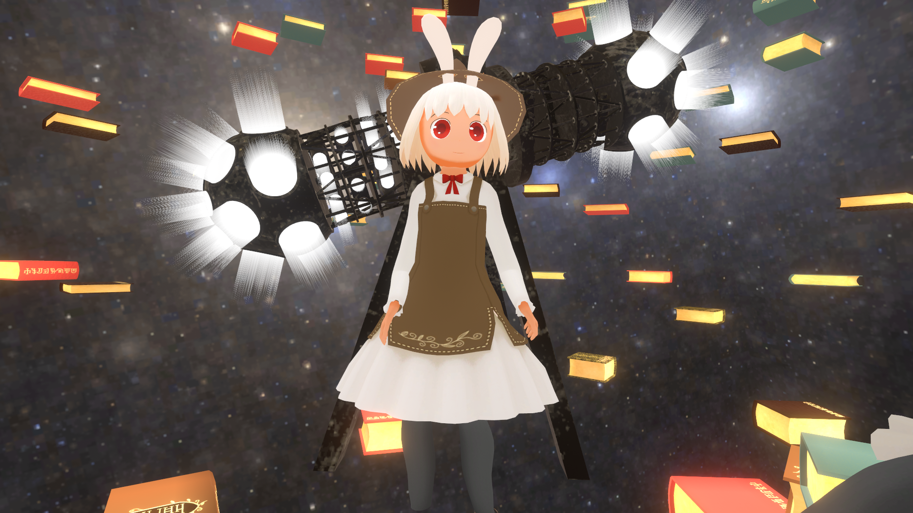
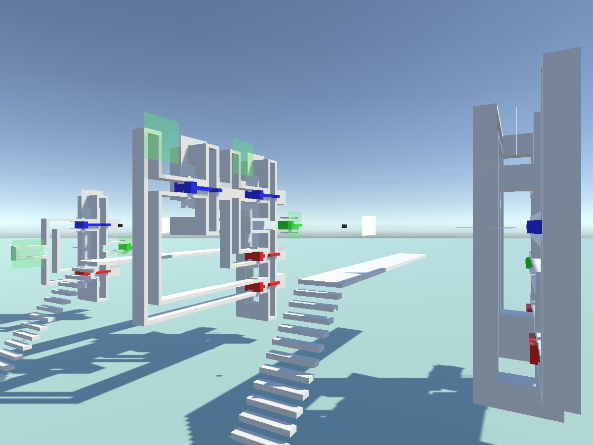
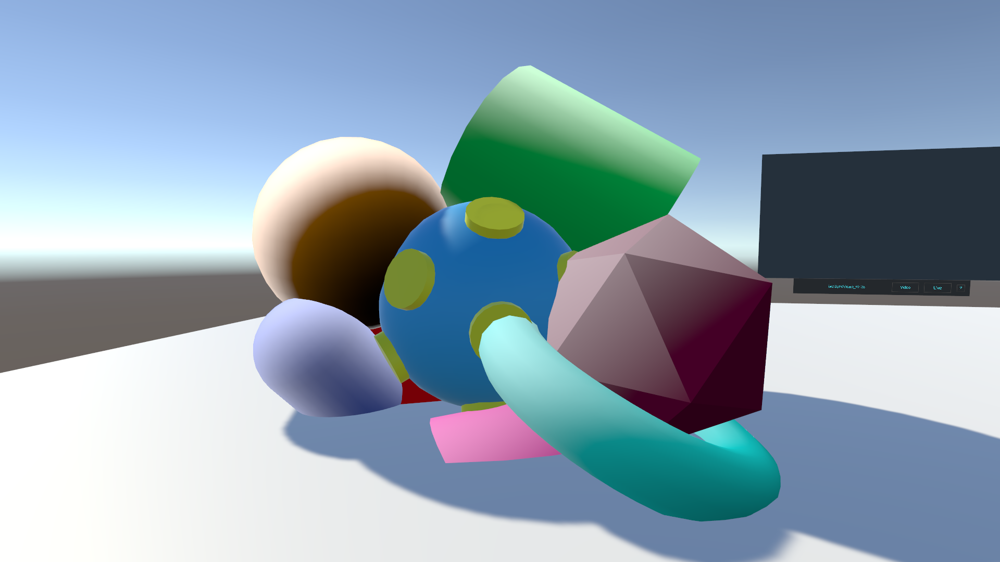

なにか
id
myxy/みきしぃ
近影（VRChatのすがた）

興味の対象
- シェーダー関連技術
- 3Dモデリング
- Unity
- VR
- 理論計算機科学 (Ph.D.(Information Sciences))
- ライブコーディング(TidalCycles)
連絡先
- Gmail:
- m.myxomatosis†あっと†gmail.com
- Twitter:
- @3405691582
つくったもの・つくっているもの
3Dモデル（左から新しい順・画像クリックでBOOTHに飛びます）
シェーダー関連
VRChatワールド
-
ParticleLogic (起動リンク)
CMOS論理回路の電荷の流れをパーティクルで表現したものです．

-
Sticking Shader Demo (起動リンク)
RenderTexture経由でTransformの転送を行うことでオブジェクト同士がくっつく動作を実装しました．

イベント出展等
各種リンク
-
Twitch
TidalCyclesによるライブコーディングの動画等があります．
-
neort
主にGLSLによる作品を投稿しています．